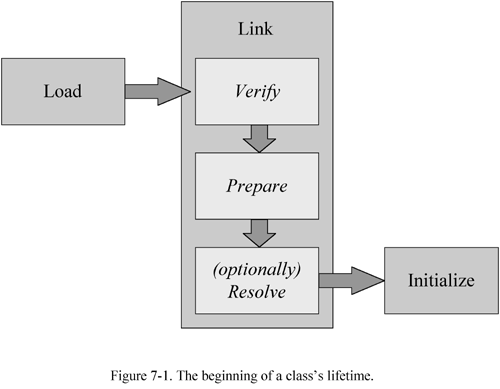
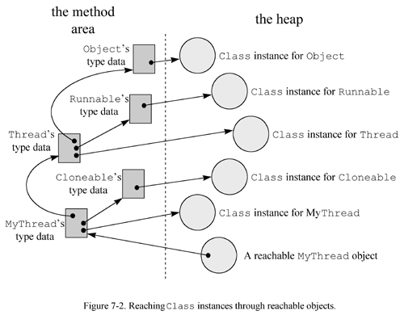

Any use of this Beta Book is subject to the rules stated in the Terms of Use.
| © 1997 The McGraw-Hill Companies, Inc. All rights reserved. Any use of this Beta Book is subject to the rules stated in the Terms of Use. | |
The previous chapter described in detail the format of the Java class file, the standard binary form for representing Java types. This chapter looks at what happens when binary type data is imported into a Java Virtual Machine. The chapter follows the lifetime of a type (class or interface) from the typeís initial entrance into the virtual machine to its ultimate exit. It discusses the processes of loading, linking, and initialization that occur at the beginning of a classís lifetime; the processes of object instantiation, garbage collection, and finalization that can occur in the prime of a classís lifetime; and the finalization and unloading of types that can occur at the end of a classís lifetime.
Class Loading, Linking, and Initialization
The Java Virtual Machine makes types available to the running program through a process of loading, linking, and initialization. Loading is the process of bringing a binary form for a type into the Java Virtual Machine. Linking is the process of incorporating the binary type data into the runtime state of the virtual machine. Linking is divided into three sub-steps: verification, preparation, and resolution. Verification ensures the type is properly formed and fit for use by the Java Virtual Machine. Preparation involves allocating memory needed by the type, such as memory for any class variables. Resolution is the process of transforming symbolic references in the constant pool into direct references. Implementations may delay the resolution step until each symbolic reference is actually used by the running program. After verification, preparation, and (optionally) resolution are completed, the type is ready for initialization. During initialization, the class variables are given their proper initial values. See Figure 7-1 for a graphical depiction of this process.

As you can see from Figure 7-1, the processes of (1) loading, (2) linking, and (3) initialization must take place in that order. The only exception to this required ordering is the third phase of linking, resolution, which may optionally take place after initialization.
The Java Virtual Machine specification gives implementations flexibility in the timing of class and interface loading and linking, but strictly defines the timing of initialization. All implementations must initialize each class and interface on its first active use. An active use of a class is:
An active use of an interface is:
All other uses of a type besides the five listed above are passive uses of the type. Several examples illustrating the difference between active and passive uses are given later in this chapter.
Aside from its own initial active use, there is one other situation that will cause the initialization of a class: the initial active use of one of its subclasses. Initialization of a class requires prior initialization of all its superclasses.
The same is not true of interfaces, however. An interface is initialized only because a non-constant field declared by the interface is used, never because a subinterface or class that implements the interface needs to be initialized. Thus, initialization of a class requires prior initialization of all its superclasses, but not its superinterfaces. Initialization of an interface does not require initialization of its superinterfaces.
The "initialize on first active use" rule drives the mechanism that loads, links, and initializes classes. On its first active use, a type must be initialized. Before it can be initialized, however, it must be linked. And before it can be linked, it must be loaded. At their option, implementations may load and link types early. They need not wait until the typeís first active use to load and link the type. If a type hasnít been loaded and linked before its first active use, however, it must be loaded and linked at that time, so that it can be initialized.
Loading
The loading process consists of three basic activities. To load a type, the Java Virtual Machine must:
The stream of binary data may adhere to the Java class file format, but could alternatively follow some other format. As mentioned in previous chapters, all Java Virtual Machine implementations must recognize the Java class file format, but individual implementations may also recognize other binary formats.
The Java Virtual Machine specification does not say how the binary data for a type must be produced. Some potential ways to produce binary data for a type are:
Given the binary data for a type, the Java Virtual Machine must process that data to a great enough extent that it can create an instance of class java.lang.Class. The virtual machine must parse the binary data into implementation-dependent internal data structures. (See Chapter 5, "The Java Virtual Machine," for a discussion of potential internal data structures for storing class data.) The Class instance, the end product of the loading step, serves as an interface between the program and the internal data structures. To access information about a type that is stored in the internal data structures, the program invokes methods on the Class instance for that type.
As described in previous chapters, types are loaded either through the primordial class loader or through class loader objects. The primordial class loader, a part of the virtual machine implementation, loads types (including the classes and interfaces of the Java API) in an implementation-dependent way. Class loader objects, instances of subclasses of java.lang.ClassLoader, load classes in custom ways. The inner workings of class loader objects are described in more detail later in Chapter 8, "The Linking Model."
Class loaders (primordial or object) need not wait until a typeís first active use before they load the type. Class loaders are allowed to cache binary representations of types, load types early in anticipation of eventual use, or load types together in related groups. If a class loader encounters a problem during early loading, however, it must report that problem (by throwing a subclass of LinkageError) only upon the typeís first active use. In other words, if a class loader encounters a missing or malformed class file during early loading, it must wait to report that error until the classís first active use by the program. If the class is never actively used by the program, the class loader will never report the error.
Verification
After a type is loaded, it is ready to be linked. The first step of the linking process is verification--ensuring that the type obeys the semantics of the Java language and that it wonít violate the integrity of the virtual machine.
Verification is another area in which implementations of the Java Virtual Machine have some flexibility. Implementation designers can decide how and when to verify types. The Java Virtual Machine specification lists all the exceptions that a virtual machine can throw and under what circumstances it must throw them. No matter what kind of trouble a Java Virtual Machine might encounter, there is an exception or error it is supposed to throw. The specification says what exception or error should be thrown in each situation. In some cases, the specification says exactly when the exception or error should be thrown, but usually doesnít dictate precisely how or when the error condition should be detected.
Nevertheless, certain kinds of checks are very likely to take place at certain times in most Java Virtual Machine implementations. For example, during the loading process, the virtual machine must parse the stream of binary data that represents the type and build internal data structures. At this point, certain checks will have to be done just to ensure the initial act of parsing the binary data wonít crash the virtual machine. During this parsing, implementations will likely check the binary data to make sure it has the expected overall format. Parsers of the Java class file format might check the magic number, make sure each component is in the right place and of the proper length, verify that the file isnít too short or too long, and so on. Although these checks take place during loading, before the official verification phase of linking, they are still logically part of the verification phase. The entire process of detecting any kind of problem with loaded types is placed under the category of verification.
Another check that likely occurs during loading is making sure that every class except Object has a superclass. This may be done during loading because when the virtual machine loads a class, it must also make sure all of the classís superclasses are loaded also. The only way a virtual machine can know the name of a given classís superclass is by peering into the binary data for the class. Since the virtual machine is looking at every classís superclass data during loading anyway, it may as well make this check during the loading phase.
Another check--one that likely occurs after the official verification phase in most implementations--is the verification of symbolic references. As described in earlier chapters, the process of dynamic linking involves locating classes, interfaces, fields, and methods referred to by symbolic references stored in the constant pool, and replacing the symbolic references with direct references. When the virtual machine searches for a symbolically referenced entity (type, field, or method), it must first make sure the entity exists. If the virtual machine finds that the entity exists, it must further check that the referencing type has permission to access the entity, given the entityís access permissions. These checks for existence and access permission are logically a part of verification, the first phase of linking, but most likely happen during resolution, the third phase of linking. Resolution itself can be delayed until each symbolic reference is first used by the program, so these checks may even take place after initialization.
So what gets checked during the official verification phase? Anything that hasnít already been checked before the official verification phase and that wonít get checked after it. Here two lists of some of the things that are good candidates for checking during the official verification phase. This first list is composed of checks that ensure classes are binary compatible with each other:
Note that while these checks require looking at other types, they only require looking at supertypes. Superclasses need to be initialized before subclasses, so these classes are likely already loaded. Superinterfaces do not need to be initialized when a class that implements them is initialized. However, this verification step will require their loading. (They wonít be initialized, just loaded and possibly linked at the option of the virtual machine implementation.) All a classís supertypes will have to be loaded to make sure they are all still binary compatible.
The most complicated task in the above list is the last one: bytecode verification. All Java Virtual Machines must in some way verify the integrity of the bytecodes for every method they execute. For example, implementations are not allowed to crash because a jump instruction sends the virtual machine beyond the end of a method. They must detect that the jump instruction is invalid through some process of bytecode verification, and throw an error.
Java Virtual Machine implementations are not required to verify bytecodes during the official verification phase of linking. Implementations are free, for example, to verify individual instructions as each instruction is executed. One of the design goals of the Java Virtual Machine instruction set, however, was that it yield bytecodes streams that can be verified all at once by a data flow analyzer. The ability to verify bytecode streams all at once during linking, rather than on the fly as the program runs, gives a big boost to the potential execution speed of Java programs.
When verifying bytecodes via a data flow analyzer, the virtual machine may have to load other classes to ensure that the semantics of the Java language are being followed. For example, imagine a class contained a method that assigned a reference to an instance of java.lang.Float to a field of type java.lang.Number. In this case, the virtual machine would have to load class Float during bytecode verification to make sure it was a subclass of class Number. It would have to load Number to make sure it wasnít declared final. The virtual machine must not initialize class Float at this time, just load it. Float will be initialized only upon its first active use.
For more information on the class verification process, see Chapter 3, "Security."
Preparation
After a Java Virtual Machine has loaded a class and performed whatever verification it chooses to do up front, the class is ready for preparation. During the preparation phase, the Java Virtual Machine allocates memory for the class variables and sets them to default initial values. The class variables are not initialized to their proper initial values until the initialization phase. (No Java code is executed during the preparation step.) During preparation, the Java Virtual Machine sets the newly allocated memory for the class variables to a default value determined by the type of the variable. The default values for the various types are shown in Table 7-1.
Table 7-1. Default initial values for the primitive types
| int | 0 |
| long | 0L |
| short | (short) 0 |
| char | '\u0000' |
| byte | (byte) 0 |
| reference | null |
| float | 0.0f |
| double | 0.0d |
There is no boolean in Table 7-1, because boolean is not a primitive type in the Java Virtual Machine. Internally, boolean is implemented as an int, which gets set to zero (boolean false) by default. Therefore, boolean class variables are in effect initialized to boolean false.
During the preparation phase, Java Virtual Machine implementations may also allocate memory for data structures that are intended to improve the performance of the running program. An example of such a data structure is a method table, which contains a pointer to the data for every method in a class, including those inherited from its superclasses. A method table enables an inherited method to be invoked on an object without a search of superclasses at the point of invocation. Method tables are described in more detail in Chapter 8, "The Linking Model."
Resolution
After a type has been through the first two phases of linking: verification and preparation, it is ready for the third and final phase of linking: resolution. Resolution is the process of locating classes, interfaces, fields, and methods referenced symbolically from a typeís constant pool, and replacing those symbolic references with direct references. As mentioned above, this phase of linking is optional until (and unless) each symbolic reference is first used by the program. Constant pool resolution is described in detail in Chapter 8, "The Linking Model."
Initialization
The final step required to ready a class or interface for its first active use is initialization, the process of setting class variables to their proper initial values. As used here, a "proper" initial value is the programmerís desired starting value for a class variable. A proper initial value contrasts with the default initial value given to class variables during preparation. As described above, the virtual machine assigns default values based only on each variableís type. Proper initial values, by contrast, are based on some master plan known only to the programmer.
In Java code, a proper initial value is specified via a class variable initializer or static initializer. A class variable initializer is an equals sign and expression next to a class variable declaration, as in:
begin
// On CD-ROM in file classlife/ex1/Example1a.javaclass Example1a {
// "= 3 * (int) (Math.random() * 5.0)" is the class variable
// initializer
static int size = 3 * (int) (Math.random() * 5.0);
}
end
A static initializer is a block of code introduced by the static keyword, as in:
begin
// On CD-ROM in file classlife/ex1/Example1b.javaclass Example1b {
static int size;
// This is the static initializer
static {
size = 3 * (int) (Math.random() * 5.0);
}
}
end
All the class variable initializers and static initializers of a class are collected by the Java compiler and placed into one special method, the class initialization method. In the Java class file, the class initialization method is named "<clinit". Regular methods of a Java application cannot invoke a class initialization method. This kind of method can only be invoked by the Java Virtual Machine, which invokes it to set a classís static variables to their proper initial values.
Initialization of a class consists of two steps:
When initializing a classís direct superclass, the same two steps listed above must be followed. As a result, the first class that will be initialized will always be Object, then all the classes on down the inheritance hierarchy to the class being actively used. Superclasses will be initialized before subclasses.
Initialization of an interface does not require initialization of its superinterfaces. Initialization of an interface consists of only one step:
The code of a <clinit() method does not explicitly invoke a superclassís <clinit() method. Before a Java Virtual Machine invokes the <clinit() method of a class, therefore, it must make certain the <clinit() methods of superclasses have been executed.
Java Virtual Machines must also make sure the initialization process is properly synchronized. If multiple threads need to initialize a class, only one thread should be allowed to perform the initialization while the other threads wait. After the active thread completes the initialization process, it must notify any waiting threads. See Chapter 20, "Thread Synchronization," for information about synchronization, wait and notify.
As mentioned above, Java compilers place the code for class variable initializers and static initializers into the <clinit() method of the class file in the order in which they appear in the class declaration. For example, given this class:
begin
// On CD-ROM in file classlife/ex1/Example1c.javaclass Example1c {
static int width;
static int height = (int) (Math.random() * 2.0);
// This is the static initializer
static {
width = 3 * (int) (Math.random() * 5.0);
}
}
end
The Java compiler generates the following <clinit() method:
begin
// The code for height's class variable initializer begins here// Invoke Math.random(), which will push
// a double return value
0 invokestatic #6 <Method double random()
3 ldc2_w #8 <Double 2.0 // Push double constant 2.0
6 dmul // Pop two doubles, multiply, push result
7 d2i // Pop double, convert to int, push int
// Pop int, store into class variable
// height
8 putstatic #5 <Field int height
// The code for the static initializer begins here
11 iconst_3 // Push int constant 3
// Invoke Math.random(), which will push
// a double return value
12 invokestatic #6 <Method double random()
15 ldc2_w #10 <Double 5.0 // Push double constant 5.0
18 dmul // Pop two doubles, multiply, push result
19 d2i // Pop double, convert to int, push int
20 imul // Pop two ints, multiply, push int result
// Pop int, store into class variable
// width
21 putstatic #7 <Field int width
24 return // Return void from <clinit method
end
This <clinit() method first executes the code for Example1cís only class variable initializer, which initializes height, then executes the code for the static initializer, which initializes width. The initialization is done in this order because the class variable initializer appears textually before the static initializer in the source code of the Example1c class.
Not all classes will necessarily have a <clinit() method in their class file. If a class declares no class variables, it wonít have a <clinit() method. If a class declares class variables, but doesnít explicitly initialize them with class variable initializers or static initializers, it wonít have a <clinit() method. If a class contains only class variable initializers for static final variables, and those class variable initializers use compile-time constant expressions, that class wonít have a <clinit() method. Only those classes that actually require Java code to be executed to initialize class variables to proper initial values will have a class initialization method.
Hereís an example of a class that wonít be awarded a <clinit() method by the Java compiler:
begin
// On CD-ROM in file classlife/ex1/Example1d.javaclass Example1d {
static final int angle = 35;
static final int length = angle * 2;
}
end
Class Example1d declares two constants, angle and length, and initializes them with expressions that are compile-time constants. The compiler knows that angle represents the value 35 and length represents the value 70. When the Example1d class is loaded by a Java Virtual Machine, angle and length are not stored as class variables in the method area. As a result, no <clinit() method is needed to initialize them. The angle and length fields are not class variables, they are constants, which are treated specially by the Java compiler.
Instead of treating Example1dís angle and length fields as class variables, the Java compiler places the constant int values they represent into the constant pool or bytecode streams of any class that uses them. For example, if a class uses Example1dís angle field, that class will not have in its constant pool a symbolic reference to the angle field of class Example1d. Instead, the class will have operands embedded in its bytecode streams that have the value 35. If the constant value of angle were outside the range of a short (-32,768 to 32,767), say 35,000, the class would have a CONSTANT_Integer_info entry in its constant pool with the value of 35,000.
Hereís a class that uses both a constant and a class variable from other classes:
begin
// On CD-ROM in file classlife/ex1/Example1e.javaclass Example1e {
// The class variable initializer for symbolicRef uses a symbolic
// reference to the size class variable of class Example1a
static int symbolicRef = Example1a.size;
// The class variable initializer for localConst doesn't use a
// symbolic reference to the length field of class Example1d.
// Instead, it just uses a copy of the constant value 70.
static int localConst = Example1d.length * (int) (Math.random()
* 3.0);
}
end
The Java compiler generates the following <clinit() method for class Example1e:
begin
// The code for symbolicRef's class variable initializer begins here:// Push int value from Example1a.size.
// This getstatic instruction refers to a
// symbolic reference to Example1a.size.
0 getstatic #9 <Field int size
// Pop int, store into class variable
// symbolicRef
3 putstatic #10 <Field int symbolicRef
// The code for localConst's class variable intializer begins here:
// Expand byte operand to int, push int
// result. This is the local copy of
6 bipush 70 // Example1d's length constant, 70.
// Invoke Math.random(), which will push
// a double return value
8 invokestatic #8 <Method double random()
11 ldc2_w #11 <Double 3.0 // Push double constant 3.0
14 dmul // Pop two doubles, multiply, push result
15 d2i // Pop double, convert to int, push int
16 imul // Pop two ints, multiply, push int result
// Pop int, store into class variable
// localConst
17 putstatic #7 <Field int localConst
20 return // Return void from <clinit method
end
The getstatic instruction at offset zero uses a symbolic reference (in constant pool entry nine) to the size field of class Example1a. The bipush instruction at offset six is followed by a byte that contains the constant value represented by Example1d.length. Example1eís constant pool contains no symbolic reference to anything in class Example1d.
Interfaces may also be awarded a <clinit() method in the class file. All fields declared in an interface are implicitly public, static, and final and must be initialized with a field initializer. If an interface has any field initializers that donít resolve at compile-time to a constant, that interface will have a <clinit() method. Hereís an example:
begin
// On CD-ROM in file classlife/ex1/Example1f.javainterface Example1f {
int ketchup = 5;
int mustard = (int) (Math.random() * 5.0);
}
end
The Java compiler generates the following <clinit() method for interface Example1f:
begin
// The code for mustard's class variable initializer begins here// Invoke Math.random(), which will push
// a double return value
0 invokestatic #6 <Method double random()
3 ldc2_w #7 <Double 5.0 // Push double constant 2.0
6 dmul // Pop two doubles, multiply, push result
7 d2i // Pop double, convert to int, push int
// Pop int, store into class variable
// mustard
8 putstatic #5 <Field int mustard
11 return // Return void from <clinit method
end
Note that only the mustard field is initialized by this <clinit() method. Because the ketchup field is initialized to a compile-time constant, it is treated specially by the compiler. Although types that use Example1f.mustard will contain a symbolic reference to the field, types that use Example1f.ketchup will contain a local copy of ketchupís constant value, 5.
As mentioned above, the Java Virtual Machine initializes types on their first active use or, in the case of classes, upon the first active use of a subclass. Only four activities constitute an active use: invoking a class initialization method on a new instance of a class, creating an array whose element type is the class, invoking a method declared in a class, and accessing a non-constant field declared in a class or interface.
A use of a non-constant field is an active use of only the class or interface that actually declares the field. For example, a field declared in a class may be referred to via a subclass. A field declared in an interface may be referred to via a subinterface or class that implements the interface. These are passive uses of the subclass, subinterface, or class that implements the interface--uses that wonít trigger their initialization. They are an active use only of the class or interface in which the field is actually declared. Hereís an example that illustrates this principle:
begin
// On CD-ROM in file classlife/ex2/NewParent.javaclass NewParent {
static int hoursOfSleep = (int) (Math.random() * 3.0);
static {
System.out.println("NewParent was initialized.");
}
}
// On CD-ROM in file classlife/ex2/NewbornBaby.java
class NewbornBaby extends NewParent {
static int hoursOfCrying = 6 + (int) (Math.random() * 2.0);
static {
System.out.println("NewbornBaby was initialized.");
}
}
// On CD-ROM in file classlife/ex2/Example2.java
class Example2 {
// Invoking main() is an active use of Example2
public static void main(String[] args) {
// Using hoursOfSleep is an active use of Parent, but a
// passive use of NewbornBaby
int hours = NewbornBaby.hoursOfSleep;
System.out.println(hours);
}
static {
System.out.println("Example2 was initialized.");
}
}
end
In the above example, executing main() of Example2 causes only Example2 and Parent to be initialized. NewbornBaby is not initialized and need not be loaded. The following text is printed to the standard output:
begin
Example2 was initialized.
NewParent was initialized.
2
end
A use of a field that is both static and final, and initialized by a compile-time constant expression, is not an active use of the type that declares the field. As mentioned above, the Java compiler resolves references to such fields to a local copy of the constant value that resides either in the referring classes constant pool, in its bytecode streams, or both. Hereís an example that illustrates this special treatment of static final fields:
begin
// On CD-ROM in file classlife/ex3/Angry.javainterface Angry {
String greeting = "Grrrr!";
int angerLevel = Dog.getAngerLevel();
}
// On CD-ROM in file classlife/ex3/Dog.java
class Dog {
static final String greeting = "Woof, woof, world!";
static {
System.out.println("Dog was initialized.");
}
static int getAngerLevel() {
System.out.println("Anger was initialized");
return 1;
}
}
// On CD-ROM in file classlife/ex3/Example3.java
class Example3 {
// Invoking main() is an active use of Example4
public static void main(String[] args) {
// Using Angry.greeting is a passive use of Angry
System.out.println(Angry.greeting);
// Using Dog.greeting is a passive use of Dog
System.out.println(Dog.greeting);
}
static {
System.out.println("Example3 was initialized.");
}
}
end
Running the Example4 application yields the following output:
begin
Example3 was initialized.
Grrrr!
Woof, woof, world!
end
Had Angry been initialized, the string "Angry was initialized." would have been written to the standard output. Likewise, had Dog been initialized, the string "Dog was initialized." would have been written to the standard output. As you can see from the above output, neither interface Angry or class Dog were ever initialized during the execution of the Example3 application.
For more information about this special treatment of static final variables, see Chapter 8, "The Linking Model."
The Lifetime of an Object
Once a class has been loaded, linked, and initialized, it is ready for use. The program can access its static fields, invoke its static methods, or create instances of it. This section describes class instantiation and initialization, activities that take place at the beginning of an objectís lifetime, and garbage collection and finalization, activities that mark the end of an objectís lifetime.
Class Instantiation
In Java programs, classes can be instantiated explicitly or implicitly. The three ways a class can be instantiated explicitly are with the new operator, by invoking newInstance()on a Class object, or by invoking clone() on any existing object. Here is an example showing each way to create a new class instance:
begin
// On CD-ROM in file classlife/ex4/Example4.javaclass Example4 implements Cloneable {
Example4() {
System.out.println("Created by invoking newInstance()");
}
Example4(String msg) {
System.out.println(msg);
}
public static void main(String[] args)
throws ClassNotFoundException, InstantiationException,
IllegalAccessException, CloneNotSupportedException {
// Create a new Example4 object with the new operator
Example4 obj1 = new Example4("Created with new.");
// Get a reference to the Class instance for Example4, then
// invoke newInstance() on it to create a new Example4 object
Class myClass = Class.forName("Example4");
Example4 obj2 = (Example4) myClass.newInstance();
// Make an identical copy of the the second Example4 object
Example4 obj3 = (Example4) obj2.clone();
}
}
end
When executed, the Example4 application prints this output:
begin
Created with new.Created by invoking newInstance()
end
Besides the three ways listed above to explicitly instantiate objects in Java source code, there are several situations in which objects will be instantiated implicitly--without an explicit new, newInstance(), or clone() appearing in the source.
Possibly the first implicitly instantiated objects of any Java application are the String objects that hold the command line arguments. References to these objects, one for each command-line argument, are delivered in the String array passed as the sole parameter to the main() method of every application.
Two other ways a class can be instantiated implicitly involve the process of class loading. First, for every type a Java Virtual Machine loads, it implicitly instantiates a new Class object to represent that type. Second, when the Java Virtual Machine loads a class that contains CONSTANT_String_info entries in its constant pool, it may instantiate new String objects to represent those constant string literals. The process of transforming a CONSTANT_String_info entry in the method area to a String instance on the heap is part of the process of constant pool resolution. This process is described in detail in Chapter 8, "The Linking Model."
Another way objects can be created implicitly is through the process of evaluating an expression that involves the string concatenation operator. If such an expression is not a compile-time constant, intermediate String and StringBuffer objects will be created in the process of evaluating the expression. Hereís an example:
begin
// On CD-ROM in file classlife/ex5/Example5.javaclass Example5 {
public static void main(String[] args) {
if (args.length < 2) {
System.out.println("Must enter any two args.");
return;
}
System.out.println(args[0] + args[1]);
}
}
end
javac generates these bytecodes for Example5ís main() method:
begin
0 aload_0 // Push the objref from loc var 0 (args)1 arraylength // Pop arrayref, calc array length, push int length
2 iconst_2 // Push int constant 2
// Pop 2 ints, compare, branch if (length
2) to3 if_icmpge 15 // offset 15.
// Push objref from System.out
6 getstatic #11 <Field java.io.PrintStream out
// Push objref of string literal
9 ldc #1 <String "Must enter any two args."
// Pop objref to String param, objref to System.out,
// invoke println()
11 invokevirtual #12 <Method void println(java.lang.String)
14 return // Return void from main()
// Push objref from System.out
15 getstatic #11 <Field java.io.PrintStream out
// The string concatenation operation begins here
// Allocate mem for new StringBuffer object, and
// initialize mem to default initial values, push
// objref to new object
18 new #6 <Class java.lang.StringBuffer
21 dup // Duplicate objref to StringBuffer object
22 aload_0 // Push ref from loc var 0 (args)
23 iconst_0 // Push int constant 0
// Pop int, arrayref, push String at arrayref[int],
24 aaload // which is args[0]
// Pop objref, invoke String's class method
// valueOf(), passing it the objref to the args[0]
// String object. valueOf() calls toString() on the
// ref, and returns (and pushes) the result, which
// happens to be the original args[0] String. In this
// case, the stack will look precisely the same
// before and after this instruction is executed.
// Thus here, the 1.1 javac compiler has
// over-enthusiastically generated an unnecessary
// instruction.
25 invokestatic #14 <Method java.lang.String valueOf(
java.lang.Object)
// Pop objref to args[0] String, objref of the
// StringBuffer object, invoke <init() method on the
// StringBuffer object passing the args[0] objref as
// the only parameter.
28 invokespecial #9 <Method java.lang.StringBuffer(java.lang.String)
31 aload_0 // Push objref from loc var 0 (args)
32 iconst_1 // Push int constant 1
// Pop int, arrayref, push String at arrayref[int],
33 aaload // which is args[1]
// Pop objref to args[1] String, objref of the
// StringBuffer object (there's still another objref
// to this same object on the stack because of the
// dup instruction above), invoke append() method on
// StringBuffer object, passing args[1] as the only
// parameter. append() will return an objref to this
// StringBuffer object, which will be pushed back
// onto the stack.
34 invokevirtual #10 <Method java.lang.StringBuffer append(java.lang.String)
// Pop objref to StringBuffer (pushed by append()),
// invoke toString() on it, which returns the value
// of the StringBuffer as a String object. Push
// objref of String object.
37 invokevirtual #13 <Method java.lang.String toString()
// The string concatenation operation is now complete
// Pop objref of concatenated String, objref of
// System.out that was pushed by the getstatic
// instruction at offset 15. Invoke println() on
// System.out, passing the concatenated String as
// the only parameter.
40 invokevirtual #12 <Method void println(java.lang.String)
43 return // Return void from main()
end
The bytecodes for Example5ís main() method contain three implicitly generated String objects and one implicitly generated StringBuffer object. References to two of the String objects appear as arguments passed to main() in the args array, which are pushed onto the stack by the aaload instructions at offset 23 and 33. The StringBuffer is created with the new instruction at offset 18 and initialized with the invokespecial instruction at offset 28. The final String, which represents the concatenation of args[0] and args[1], is created by calling toString() on the StringBuffer object via the invokevirtual instruction at offset 37.
When the Java Virtual Machine creates a new instance of a class, either implicitly or explicitly, it first allocates memory on the heap to hold the objectís instance variables. Memory is allocated for all variables declared in the objectís class and in all its superclasses, including instance variables that are hidden. As described in Chapter 5, "The Java Virtual Machine," memory for other implementation-dependent components of an objectís image on the heap, such as a pointer to class data in the method area, are also likely allocated at this point. As soon as the virtual machine has set aside the heap memory for a new object, it immediately initializes the instance variables to default initial values. These are the same values shown above in Table 7-1 as default initial values for class variables.
Once the virtual machine has allocated memory for the new object and initialized the instance variables to default values, it is ready to give the instance variables their proper initial values. The Java Virtual Machine uses two techniques to do this, depending upon whether the object is being created because of a clone() invocation. If the object is being created because of a clone(), the virtual machine copies the values of the instance variables of the object being cloned into the new object. Otherwise, the virtual machine invokes an instance initialization method on the object. The instance initialization method initializes the objectís instance variables to their proper initial values.
The Java compiler generates at least one instance initialization method for every class it compiles. In the Java class file, the instance initialization method is named "<init." For each constructor in the source code of a class, the Java compiler generates one <init() method. If the class declares no constructors explicitly, the compiler generates a default no-arg constructor that just invokes the superclassís no-arg constructor. As with any other constructor, the compiler creates an <init() method in the class file that corresponds to this default constructor.
An <init() method can contain three kinds of code: an invocation of another <init() method, code that implements any instance variable initializers, and code for the body of the constructor. If a constructor begins with an explicit invocation of another constructor in the same class (a this() invocation) its corresponding <init() method will be composed of two parts:
If a constructor does not begin with a this() invocation and the class is not Object, the <init() method will have three components:
If a constructor does not begin with a this() invocation and the class is Object, the first component in the above list is missing. Because Object has no superclass, its <init() methodís canít begin with a superclass <init() method invocation.
If a constructor begins with an explicit invocation of a superclass constructor ( a super() invocation), its <init() method will invoke the corresponding superclass <init() method. For example, if a constructor begins with an explicit invocation of the "super(int, String) constructor," the corresponding <init() method will begin by invoking the superclassís "<init(int, String)" method. If a constructor does not begin with an explicit this() or super() invocation, the corresponding <init() method will invoke the superclassís no-arg <init() method by default.
Hereís an example with three constructors, numbered one through three:
begin
// On CD-ROM in file classlife/ex6/Example6.javaclass Example6 {
private int width = 3;
// Constructor one:
// This constructor begins with a this() constructor invocation,
// which gets compiled to a same-class <init
() method// invocation.
Example6() {
this(1);
System.out.println("Example6(), width = " + width);
}
// Constructor two:
// This constructor begins with no explicit invocation of another
// constructor, so it will get compiled to an <init() method
// that begins with an invocation of the superclass's no-arg
// <init() method.
Example6(int width) {
this.width = width;
System.out.println("Example6(int), width = " + width);
}
// Constructor three:
// This constructor begins with super(), an explicit invocation
// of the superclass's no-arg constructor. Its <init() method
// will begin with an invocation of the superclass's no-arg
// <init() method.
Example6(String msg) {
super();
System.out.println("Example6(String), width = " + width);
System.out.println(msg);
}
public static void main(String[] args) {
String msg
= "The Agapanthus is also known as Lilly of the Nile.";
Example6 one = new Example6();
Example6 two = new Example6(2);
Example6 three = new Example6(msg);
}
}
end
When executed, the Example6 application prints this output:
begin
Example6(int), width = 1Example6(), width = 1
Example6(int), width = 2
Example6(String), width = 3
The Agapanthus is also known as Lilly of the Nile.
end
The bytecodes for Example6ís no-arg <init() method (the <init() method that corresponds to constructor one) are:
begin
// The first component, the same-class <init() invocation, begins// here:
0 aload_0 // Push the objref from loc var 0 (this)
1 iconst_1 // Push int constant 1
// Pop int and objref, invoke <init() method on
// objref (this), passing the int (a 1) as the
// only parameter.
2 invokespecial #12 <Method Example6(int)
// The second component, the body of the constructor, begins
// here:
// Push objref from System.out
5 getstatic #16 <Field java.io.PrintStream out
// Allocate mem for new StringBuffer object, and
// initialize mem to default initial values, push
// objref to new object
8 new #8 <Class java.lang.StringBuffer
11 dup // Duplicate objref to StringBuffer object
// Push objref to String literal from constant pool
12 ldc #1 <String "Example6(), width = "
// Pop objref to literal String, pop objref of the
// StringBuffer object, invoke <init() method on the
// StringBuffer object passing the args[0] objref as
// the only parameter.
14 invokespecial #14 <Method java.lang.StringBuffer(
java.lang.String)
17 aload_0 // Push objref from loc var 0 (this)
// Pop this reference, Push int value of width field
18 getfield #19 <Field int width
// Pop int (width), pop objref (StringBuffer object),
// invoke append() on StringBuffer object passing the
// width int as the only parameter. append() will add
// the string representation of the int to the end of
// the buffer, and return an objref to the same
// StringBuffer object.
21 invokevirtual #15 <Method java.lang.StringBuffer append(int)
// Pop objref to StringBuffer (pushed by append()),
// invoke toString() on it, which returns the value
// of the StringBuffer as a String object. Push
// objref of String object.
24 invokevirtual #18 <Method java.lang.String toString()
// Pop objref of String, pop objref of System.out
// that was pushed by the getstatic instruction at
// offset 5. Invoke println() on System.out,
// passing the String as the only parameter:
// System.out.println("Example6(), width = "
// + width);
27 invokevirtual #17 <Method void println(java.lang.String)
30 return // Return void from <init()
end
Note that the <init() method for constructor one begins with an invocation of a same-class <init() method, then executes the body of the corresponding constructor. Because the constructor begins with a this() invocation, its corresponding <init() method doesnít contain bytecodes for the instance variable initializer.
The bytecodes for Example6ís <init() method that takes an int parameter (the <init() method that corresponds to constructor two) is:
begin
// The first component, the superclass <init() invocation, begins// here:
0 aload_0 // Push the objref from loc var 0 (this)
// Pop objref (this), invoke the superclass's
// no-arg<init() method on objref.
1 invokespecial #11 <Method java.lang.Object()
// The second component, the instance variable initializers, begins
// here:
4 aload_0 // Push the objref from loc var 0 (this)
5 iconst_3 // Push int constant 3
// Pop int (3), pop objref (this), store 3 into
// width instance variable of this object
6 putfield #19 <Field int width
// The third component, the body of the constructor, begins
// here:
9 aload_0 // Push the objref from loc var 0 (this)
10 iload_1 // Push int from loc var 1 (int param width)
// Pop int (param width), pop objref (this), store
// int param value into width field of this object:
// this.width = width
11 putfield #19 <Field int width
// Push objref from System.out
14 getstatic #16 <Field java.io.PrintStream out
// Allocate mem for new StringBuffer object, and
// initialize mem to default initial values, push
// objref to new object
17 new #8 <Class java.lang.StringBuffer
20 dup // Duplicate objref to StringBuffer object
// Push objref to String literal from constant pool
21 ldc #3 <String "Example6(int), width = "
// Pop objref to literal String, pop objref of the
// StringBuffer object, invoke <init() method on the
// StringBuffer object passing the args[0] objref as
// the only parameter.
23 invokespecial #14 <Method java.lang.StringBuffer(
java.lang.String)
26 iload_1 // Push int from loc var 1 (int param width)
// Pop int (width), pop objref (StringBuffer object),
// invoke append() on StringBuffer object passing the
// width int as the only parameter. append() will add
// the string representation of the int to the end of
// the buffer, and return an objref to the same
// StringBuffer object.
27 invokevirtual #15 <Method java.lang.StringBuffer append(int)
// Pop objref to StringBuffer (pushed by append()),
// invoke toString() on it, which returns the value
// of the StringBuffer as a String object. Push
// objref of String object.
30 invokevirtual #18 <Method java.lang.String toString()
// Pop objref of String, pop objref of System.out
// that was pushed by the getstatic instruction at
// offset 14. Invoke println() on System.out,
// passing the String as the only parameter:
// System.out.println("Example6(int), width = "
// + width);
33 invokevirtual #17 <Method void println(java.lang.String)
36 return // Return void from <init()
end
The <init() method for constructor two has three components. First it has an invocation of the superclassís (Objectís) no-arg <init() method. The compiler generated this invocation by default, because no explicit super() invocation appears as the first statement in the body of constructor two. Following the superclass <init() invocation is the second component: the bytecodes for widthís instance variable initializer. Third, the <init() method contains the bytecodes for the body of constructor two.
The bytecodes for Example6ís <init() method that takes a String parameter (the <init() method that corresponds to constructor three) are:
begin
// The first component, the superclass <init() invocation, begins// here:
0 aload_0 // Push the objref from loc var 0 (this)
// Pop objref (this), invoke the superclass's
// no-arg<init() method on objref.
1 invokespecial #11 <Method java.lang.Object()
// The second component, the instance variable initializers, begins
// here:
4 aload_0 // Push the objref from loc var 0 (this)
5 iconst_3 // Push int constant 3
// Pop int (3), pop objref (this), store 3 into
// width instance variable of this object
6 putfield #19 <Field int width
// The third component, the body of the constructor, begins
// here:
// Push objref from System.out
9 getstatic #16 <Field java.io.PrintStream out
// Allocate mem for new StringBuffer object, and
// initialize mem to default initial values, push
// objref to new object
12 new #8 <Class java.lang.StringBuffer
15 dup // Duplicate objref to StringBuffer object
// Push objref to String literal from constant pool
16 ldc #2 <String "Example6(String), width = "
// Pop objref to literal String, pop objref of the
// StringBuffer object, invoke <init() method on the
// StringBuffer object passing the args[0] objref as
// the only parameter.
18 invokespecial #14 <Method java.lang.StringBuffer(
java.lang.String)
21 aload_0 // Push objref from loc var 0 (this)
// Pop this reference, Push int value of width field
22 getfield #19 <Field int width
// Pop int (width), pop objref (StringBuffer object),
// invoke append() on StringBuffer object passing the
// width int as the only parameter. append() will add
// the string representation of the int to the end of
// the buffer, and return an objref to the same
// StringBuffer object.
25 invokevirtual #15 <Method java.lang.StringBuffer append(int)
// Pop objref to StringBuffer (pushed by append()),
// invoke toString() on it, which returns the value
// of the StringBuffer as a String object. Push
// objref of String object.
28 invokevirtual #18 <Method java.lang.String toString()
// Pop objref of String, pop objref of System.out
// that was pushed by the getstatic instruction at
// offset 9. Invoke println() on System.out,
// passing the String as the only parameter:
// System.out.println("Example6(String), width = "
// + width);
31 invokevirtual #17 <Method void println(java.lang.String)
// Push objref from System.out
34 getstatic #16 <Field java.io.PrintStream out
37 aload_1 // Push objref from loc var 1 (param msg)
// Pop objref of String, pop objref of System.out
// that was pushed by the getstatic instruction at
// offset 37. Invoke println() on System.out,
// passing the String as the only parameter:
// System.out.println(msg);
38 invokevirtual #17 <Method void println(java.lang.String)
41 return // Return void from <init()
end
The <init() method for constructor three has the same three components as the <init() method for constructor two: a superclass <init() invocation, the bytecodes for widthís initializer, and the bytecodes for the constructor body. One difference between constructor two and three is that constructor two does not begin with an explicit this() or super() invocation. As a result, the compiler places an invocation of the superclassís no-arg <init() method in constructor twoís <init() method. By contrast, constructor three begins with an explicit super() invocation, which the compiler converts into the corresponding superclass <init() invocation in constructor threeís <init() method.
For every class except Object, an <init() method must begin with an invocation of another <init() method belonging either to the same class or to the direct superclass. <init() methods are not allowed to catch exceptions thrown by the <init() method they invoke. If a subclass <init() method invokes a superclass <init() method that completes abnormally, for example, the subclass <init() method must also complete abnormally.
Garbage Collection and Finalization of Objects
As mentioned in earlier chapters, implementations of the Java Virtual Machine must have some kind of automatic storage management strategy for the heap, most likely a garbage collector. Applications can allocate memory for objects via the explicit and implicit ways described earlier in this chapter, but cannot explicitly free that memory. When an object becomes unreferenced by the application, the virtual machine may reclaim (garbage collect) that memory. Implementations can decide when to garbage collect unreferenced objects--even whether to garbage collect them at all. Java Virtual Machine implementations are not required to free memory occupied by unreferenced objects.
If a class declares a method named finalize() that returns void, the garbage collector will execute that method (called a "finalizer") once on an instance of that class, before it frees the memory space occupied by that instance. Hereís an example of a class that declares a finalizer:
begin
// On CD-ROM in file classlife/ex7/Finale.javaclass Finale {
protected void finalize() {
System.out.println("A Finale object was finalized.");
//...
}
//...
}
end
Because a finalizer is a regular Java method, it may be invoked directly by the application. Such a direct invocation will not affect the automatic invocation of the finalizer by the garbage collector. The garbage collector may invoke an objectís finalizer at most once, sometime after the object becomes unreferenced and before the memory it occupies is reused. If the object becomes referenced again (resurrected) as a result of executing the finalizer code, and then becomes unreferenced again later, the garbage collector must not automatically invoke the finalizer a second time.
Any exceptions thrown by the finalize() method during its automatic invocation by the garbage collector are ignored. The garbage collector may invoke finalize() methods in any order, using any thread, or even concurrently via multiple threads. Finalization is described in more detail in Chapter 9, "Garbage Collection."
Unloading and Finalization of Classes
In many ways, the lifetime of a class in the Java Virtual Machine is similar to the lifetime of an object. The virtual machine creates and initializes objects, allows the program to use the objects, and optionally garbage collects the objects after they are no longer referenced by the program. Similarly, the virtual machine loads, links, and initializes classes, allows the program to use the classes, and optionally unloads the classes after they are no longer referenced by the program. Just as the Java Virtual Machine will run an objectís finalize() method (if its class declares one) before it garbage collects the object, the Java Virtual Machine will run a classís classFinalize() method (if the class declares one) before it unloads the class.
Garbage collection and unloading of classes is important in the Java Virtual Machine because Java programs can be dynamically extended at runtime by loading types through class loader objects. All loaded types occupy memory space in the method area. If a Java application continuously loads types through class loader objects, the memory footprint of the method area will continuously grow. If some of the dynamically loaded types are needed only temporarily, the memory space occupied by those types can be freed by unloading the types after they are no longer needed.
The way in which a Java Virtual Machine can tell whether a dynamically loaded type is still needed by the application is similar to the way it tells whether an object is still needed by the program. If the application has no references to the type, then the type canít affect the future course of computation. The type is unreachable and can be garbage collected.
Types loaded through the primordial class loader will always be reachable and never be unloaded. Only dynamically loaded types--those loaded through class loader objects--can become unreachable and be unloaded by the virtual machine. A dynamically loaded type is unreachable if its Class instance is found to be unreachable through the normal process of garbage collecting the heap.
There are two ways a Class instance of a dynamically loaded type can be reachable through the normal process of garbage collection. First and most obviously, a Class instance will be reachable if the application holds an explicit reference to it. Second, a Class instance will be reachable if there is a reachable object on the heap whose type data in the method area refers to the Class instance. As mentioned in Chapter 5, "The Java Virtual Machine," implementations must be able to locate the type data in the method are for an objectís class, given only a reference to the object. For this reason, the image of an object on the heap likely includes some kind of pointer to its type data in the method area. From the type data, the virtual machine must be able to locate the Class instances for the objectís class, all its superclasses, and all its superinterfaces. See Figure 7-2 for a graphical depiction of this way of "reaching" Class instances.

Figure 7-2 shows the paths a garbage collector must traverse from a reachable object of class MyThread through the type data in the method area to find reachable Class instances. In this figure, objects on the heap are shown as light gray circles; type data in the method are is shown as dark gray rectangles. The MyThread class has the following declaration:
begin
// On CD-ROM in file classlife/ex8/MyThread.javaclass MyThread extends Thread implements Cloneable {
}
end
From the reachable MyThread object (shown in the bottom right hand corner of the figure), the garbage collector follows a pointer to MyThreadís type data, where it finds:
From the type data for Cloneable, the garbage collector finds:
From the type data for Thread, the garbage collector finds:
From the type data for Runnable, the garbage collector finds:
From the type data for Object, the garbage collector finds:
Thus, given only a reference to a reachable instance of class MyThread, the garbage collector is able to "reach" the Class instances for MyThread and all its supertypes: Cloneable, Thread, Runnable, and Object.
If a class declares a method, named classFinalize(), that is static, takes no parameters, and returns void, the Java Virtual Machine will execute that method (called a "class finalizer") before it unloads the class. The class finalizer may have any access permission. Hereís an example:
begin
// On CD-ROM in file classlife/ex7/GrandFinale.javaclass GrandFinale {
static void classFinalize() {
System.out.println(
"Class GrandFinale was finally finalized.");
//...
}
//...
}
end
Similar to the finalize() method, the classFinalize() method will be called only once by the Java Virtual Machine. If a classís classFinalize() method resurrects the class (makes it reachable again), the next time the class is unloaded its classFinalize() method wonít be invoked.
An example of dynamically loaded classes becoming unreachable and available for unloading is given at the end of Chapter 8, "The Linking Model."
On the CD-ROM
The CD-ROM contains the source code examples from this chapter in the classlife directory.
The Resources Page
For more information about the material presented in this chapter, visit the resources page: http://www.artima.com/insidejvm/classlife.html.
COMPUTING MCGRAW-HILL | Beta Books | Contact Us | Order Information | Online Catalog
Computing McGraw-Hill is an imprint of the McGraw-Hill Professional Book Group.